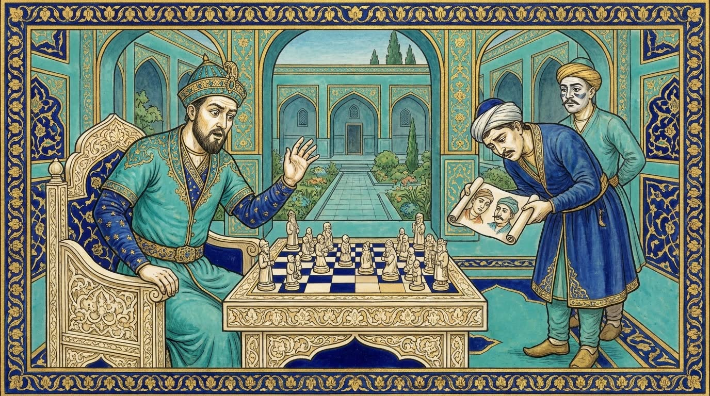

伊本·阿拉伯沙
一个被掳到撒马尔罕的大马士革男孩，长成帖木儿最怀敌意的传记作者，并保存了棋子的名字。

艾哈迈德·伊本·阿拉伯沙约于1389年生于大马士革。帖木儿的军队攻占大马士革（1400–1401）时，他与母亲和妹妹被带到撒马尔罕。他在那里度过多年，学会了波斯语和蒙古语，并师从著名学者。
后来他在奥斯曼苏丹处任书记官，回到叙利亚，于1450年在开罗去世。1435年，他用阿拉伯语韵文完成了《帖木儿事迹中的天命奇观》。这是一部毫不掩饰敌意的传记，却很珍贵：作者亲眼见过撒马尔罕的学术世界。
正是在伊本·阿拉伯沙那里，这种棋被称为“大象棋”，他的记述保存了棋子的名字。关于沙哈鲁名字的故事也出自他。